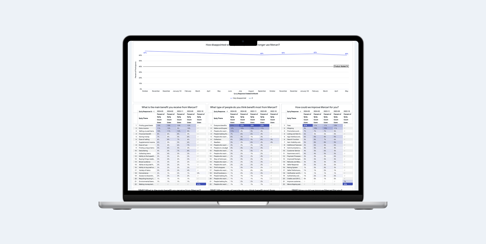
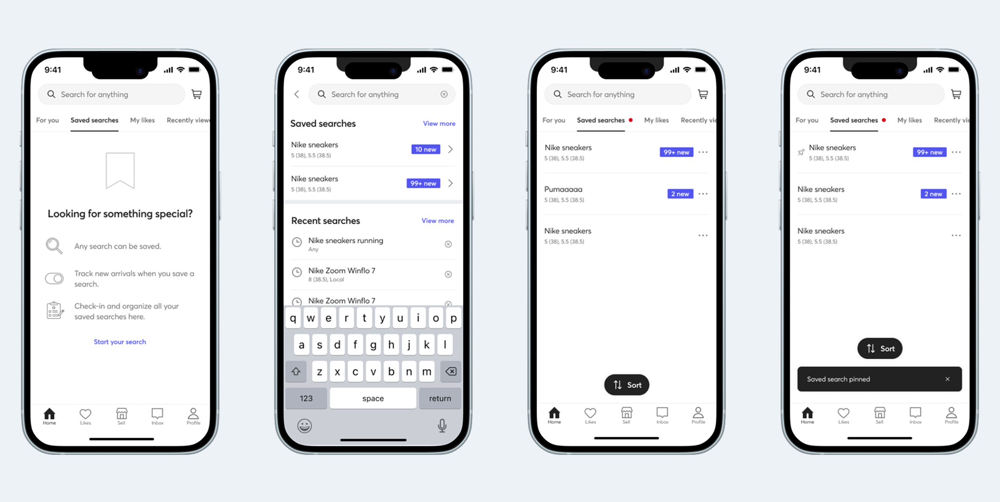

Big bets.
No baseline.
Mercari's leadership was excited about experimentation — new features, repositioned audiences, significant changes to the information architecture. What wasn't there: any consistent way to measure whether the experience was improving over time. Without a baseline, every research study was a snapshot with no context. I proposed building the program from scratch.
Auditing what existed.
Designing what didn't.
I started by auditing existing measurement across the org — what was collected, where it lived, who owned it. The gaps were significant. From there I co-created a research plan with stakeholders across product, design, data science, and marketing, centering on five core measures:
Product–market fit
Ease of use
Ease of navigation
User motivations
Competitor preferences
Once data was flowing, I worked with engineering to pipe results into Looker — giving the whole organization a live view of UX health. Getting buy-in required as much work as the research itself: gathering requirements from PMs, designers, analysts, and leadership, and building shared agreement on what we were measuring and why.

Search had been a hunch.
Now it was a fact.
Prior qualitative work had flagged search as a pain point — but qualitative signals are easy to deprioritize without numbers behind them. The benchmarking data changed that. For the first time, we had quantitative evidence that let us move from "users seem frustrated with search" to a precise, defensible problem statement the product team could act on.
Saved search was the biggest friction point
Users couldn't easily differentiate new listings or prioritize their most important searches. Redesigning the experience based on benchmarking recommendations increased search success rate by 22%.
Search results pages were underselling good inventory
I recommended adapting result density by category and clustering by predicted relevance. The experiments that followed increased orders by 13% in previously underperforming categories.
The lite listing feature hadn't made listing easier
After being moved to a different team pre-launch, I ran a post-launch benchmarking study on my own initiative. The data showed the feature hadn't landed — open-ended responses suggested it may have made the experience harder. That finding became the brief that drove a redesign in Mercari JP, resulting in a significant increase in listings from new sellers. Mercari US later adopted the same approach.

From scrappy to
the connective tissue.
The first report launched at a company-wide Lunch & Learn attended by over half of Mercari. Each quarter brought new collaborators — data scientists, customer success, and eventually a brand tracking partnership with Harris Poll. What started as a measurement gap became a shared source of truth that cross-functional teams actually used.
"We went from scrappy and haphazard experience measurement to a robust and rich system, which Megan is fully credited with."— Thea Lee, Senior UX Research Manager, Mercari